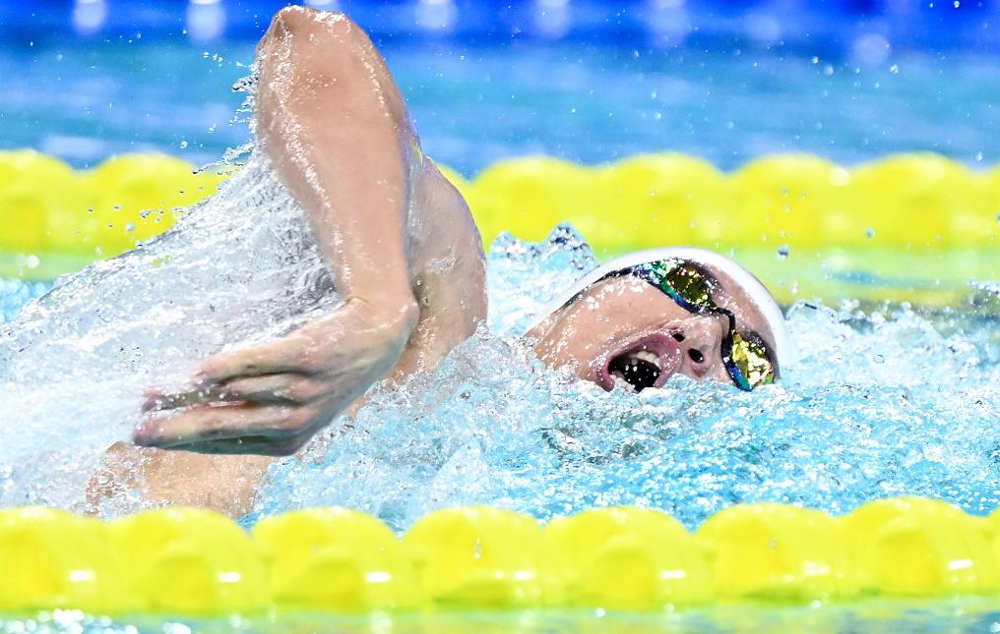

全运会 | 第18金！"五朝元老"汪顺达成四连冠

汪顺在男子200米个人混合泳决赛中展现王者风范
1分56秒20！出水后的汪顺，向看台上的观众伸出四根手指比"4"，寓意在该项目完成了全运会四连冠。这枚金牌也让汪顺五届全运会的金牌总数来到18枚，继续刷新着他自己保持的全运会个人金牌数纪录
新华社深圳11月14日电（记者夏亮）第十四届全国运动会男子200米个人混合泳决赛，浙江队选手汪顺再次展现王者风范，以绝对优势夺得金牌，完成了个人在该项目的四连冠壮举。
比赛回顾
"汪顺、汪顺、汪顺……"现场爆发出雷鸣般的欢呼声！汪顺不断点头，向全场观众示意，随后面向泳池鞠躬离开，一如每一场比赛的赛后。
14日晚进行的男子200米个人混合泳决赛，是汪顺的绝对优势项目。在此前的三届全运会上，他已经完成了三连冠的成就。
比赛分段成绩
| 泳姿 | 分段成绩 | 领先优势 |
|---|---|---|
| 蝶泳 | 24.50秒 | 0.5秒 |
| 仰泳 | 28.30秒 | 1.2秒 |
| 蛙泳 | 32.10秒 | 2.8秒 |
| 自由泳 | 31.30秒 | 3.66秒 |
| 总成绩 | 1分56秒20 | 领先3.66秒 |
比赛中，汪顺从蝶泳开始便一路领先，最终游出了今年个人最好成绩，以领先第二名3.66秒的绝对优势夺得冠军，收获个人在本届全运会上的第三枚金牌。
"这是我第五次参加全运会，也是第四次拿到这个项目的金牌。第一次拿到这枚金牌的时候非常开心，第二次开始压力很大，怕自己做不好。这一次反而轻松了，只想拼尽全力。" —— 汪顺赛后采访
赛后，汪顺感谢了很多人，尤其是教练朱志根。"感谢教练这么多年的悉心培养和陪伴，没有他就没有今天的我。"汪顺说。
传奇生涯
从青葱的19岁到已过而立之年的31岁，过去的12年，汪顺一直都是国内男子200米个人混合泳的第一人。这届全运会再次证明，即便不在自己的最巅峰，但汪顺在国内仍然是碾压般的存在。
汪顺全运会金牌历程
第十二届全运会
首次夺得男子200米个人混合泳金牌，开启统治时代
第十三届全运会
成功卫冕，实现两连冠
第十四届全运会
三连冠创造历史，东京奥运会夺冠后势头正盛
第十五届全运会
四连冠达成，金牌总数增至18枚，传奇继续
传承与希望
很多人调侃，以汪顺和徐嘉余在如今国内泳坛的统治地位，期待他们出现在2032年的布里斯班奥运会也未尝不可。
对于未来，汪顺不置可否，"年纪增长确实是个很大的挑战，现在不想做限定，还是先把这次比赛完成好。比赛这么多年，对手的年龄也一直在变，首要还是享受竞技。"
尽管在混合泳项目上国内其他小将距离自己还有一定差距，但在汪顺看来，年轻人终究会从自己的手中接过混合泳这一棒。
"一批一批（年轻人）总会上来的，也希望不会等太久，像张展硕其实也非常优秀。这次其实还有好几个优秀的年轻运动员没有游，他们这次因为有些项目冲突可能没有报，但是我相信没有问题，后面肯定会越来越好。" —— 汪顺谈年轻运动员成长
18枚
全运会金牌总数
4次
200米混合泳连冠
5届
全运会参赛经历
12年
国内统治期
31岁的汪顺用实力证明，年龄只是一个数字。在男子200米个人混合泳项目上，他依然是无可争议的王者。四连冠的伟业将永远载入全运史册，而他的故事还在继续书写。致敬这位老将，致敬这份坚持！